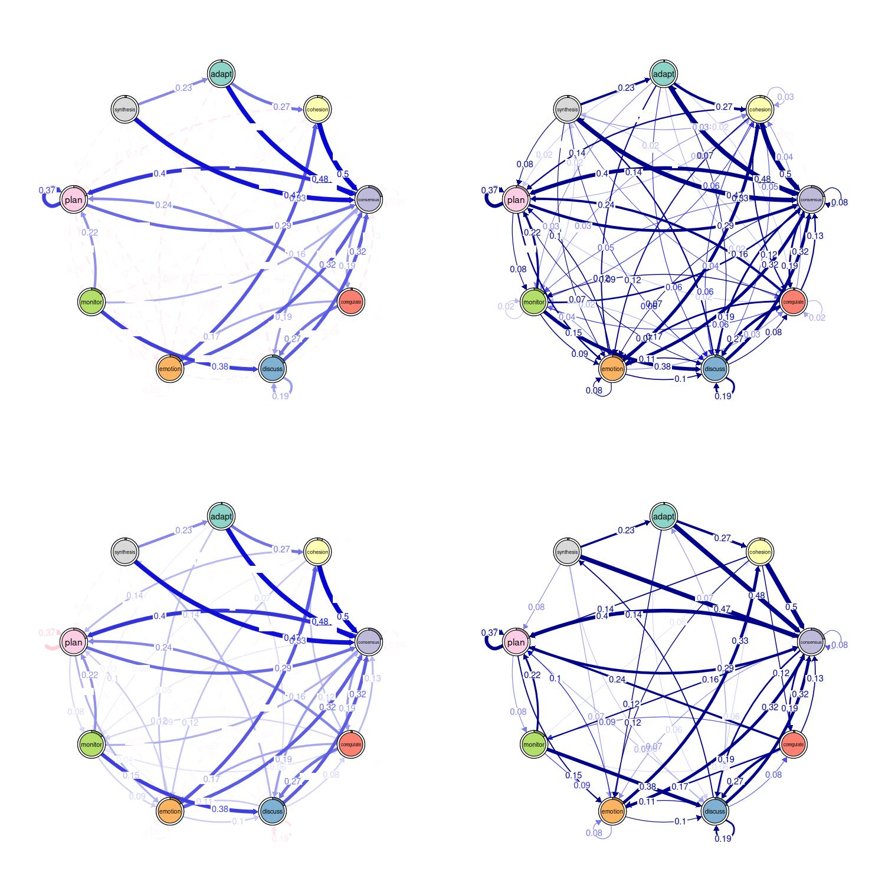
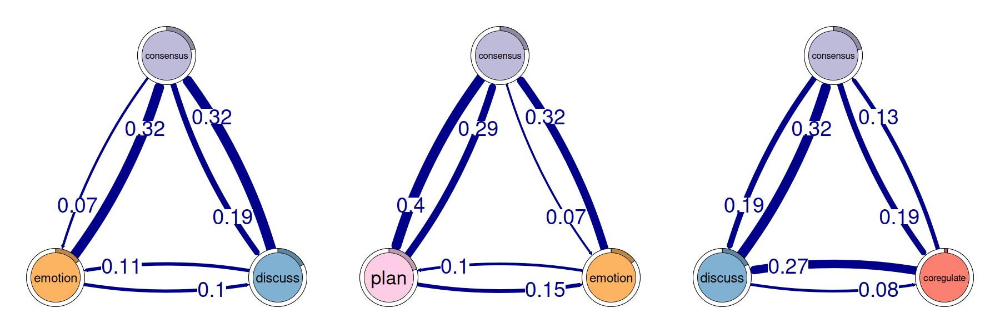
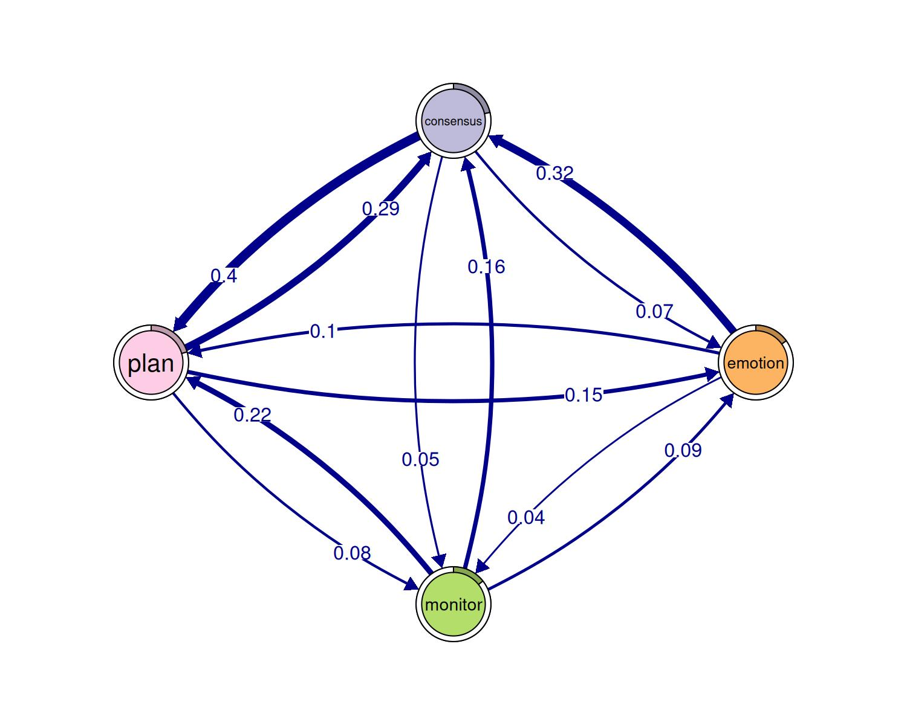
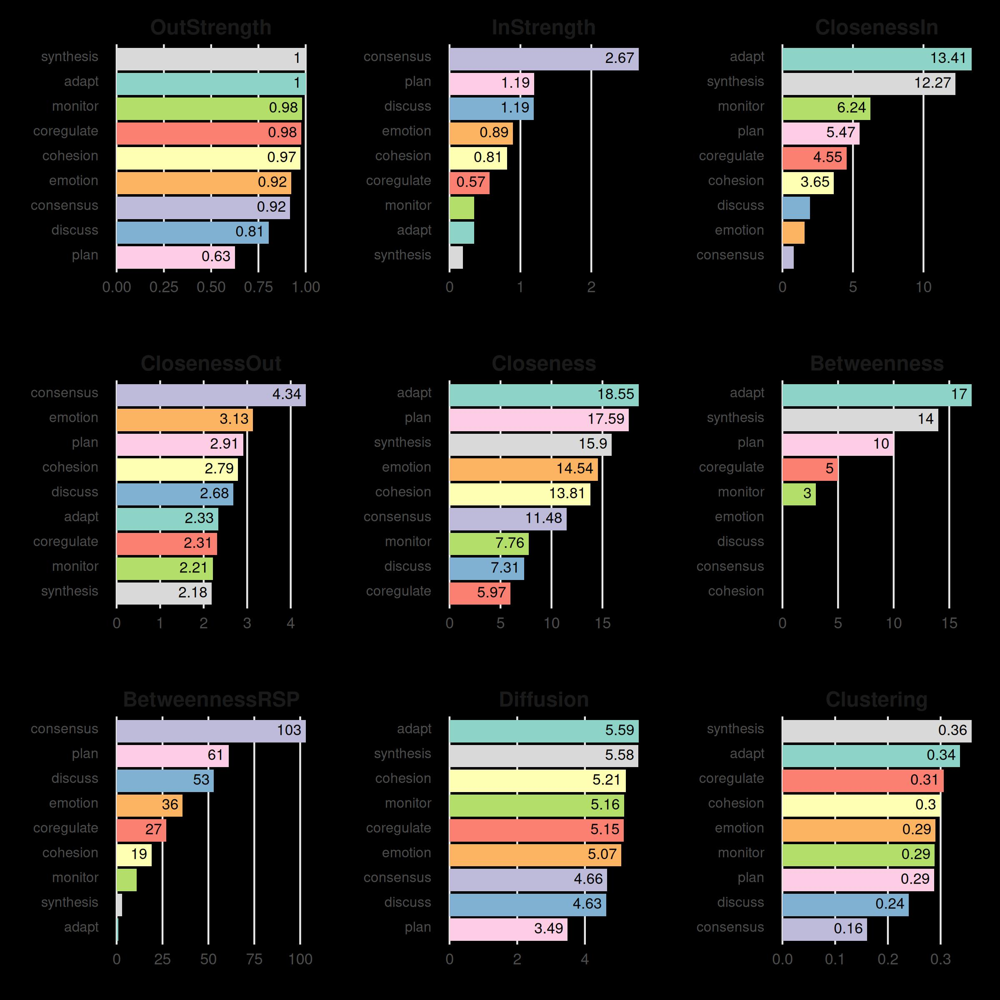
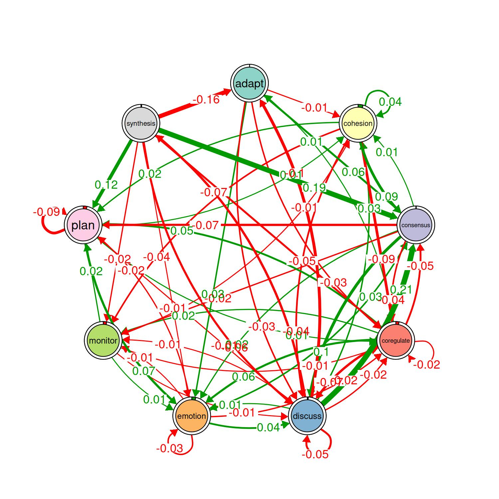
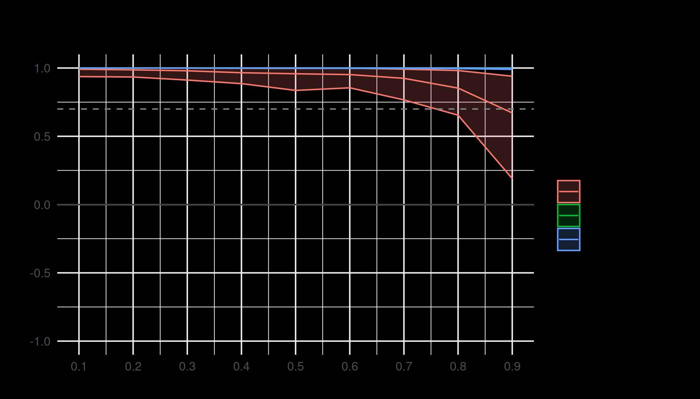

A showcase of the main tna functions
Source:vignettes/articles/complete_tutorial.Rmd
complete_tutorial.RmdTutorial of TNA with R
# Install `tna` if you haven't already
# install.packages("tna")
library("tna")
data("group_regulation")Plotting and interpreting tna models
Pruning and retaining edges that “matter”
layout(matrix(1:4, ncol = 2, byrow = TRUE))
# Pruning with different methods (using comparable parameters)
pruned_threshold <- prune(model, method = "threshold", threshold = 0.15)
pruned_lowest <- prune(model, method = "lowest", lowest = 0.15)
pruned_disparity <- prune(model, method = "disparity", level = 0.5)
# Plotting for comparison
plot(pruned_threshold)
plot(pruned_lowest)
plot(pruned_disparity)
plot(model, minimum = 0.05, cut = 0.1)
Patterns
layout(t(1:2))
# Identify 2-cliques (dyads) from the TNA model, excluding loops in the visualization
# A clique of size 2 is essentially a pair of connected nodes
cliques_of_two <- cliques(
model,
size = 2,
threshold = 0.15 # Only consider edges with weight > 0.15
)
print(cliques_of_two)
#> Number of 2-cliques = 2 (weight threshold = 0.15)
#> Showing 2 cliques starting from clique number 1
#>
#> Clique 1
#> consensus plan
#> consensus 0.082 0.40
#> plan 0.290 0.37
#>
#> Clique 2
#> consensus discuss
#> consensus 0.082 0.19
#> discuss 0.321 0.19
plot(cliques_of_two, vsize = 15, edge.label.cex = 2, esize = 20, ask = FALSE)
layout(t(1:3))
# Identify 3-cliques (triads) from the TNA_Model
# A clique of size 3 means a fully connected triplet of nodes
cliques_of_three <- cliques(
model,
size = 3,
threshold = 0.05 # Only consider edges with weight > 0.05
)
print(cliques_of_three)
#> Number of 3-cliques = 3 (weight threshold = 0.05)
#> Showing 3 cliques starting from clique number 1
#>
#> Clique 1
#> consensus discuss emotion
#> consensus 0.082 0.19 0.073
#> discuss 0.321 0.19 0.106
#> emotion 0.320 0.10 0.077
#>
#> Clique 2
#> consensus emotion plan
#> consensus 0.082 0.073 0.40
#> emotion 0.320 0.077 0.10
#> plan 0.290 0.147 0.37
#>
#> Clique 3
#> consensus coregulate discuss
#> consensus 0.082 0.188 0.19
#> coregulate 0.135 0.023 0.27
#> discuss 0.321 0.084 0.19
plot(cliques_of_three, vsize = 25, edge.label.cex = 4, esize = 20, ask = FALSE)
# Identify 4-cliques (quadruples) from the TNA_Model
# A clique of size 4 means four nodes that are all mutually connected
cliques_of_four <- cliques(
model,
size = 4,
threshold = 0.035 # Only consider edges with weight > 0.03
)
print(cliques_of_four)
#> Number of 4-cliques = 1 (weight threshold = 0.035)
#> Showing 1 cliques starting from clique number 1
#>
#> Clique 1
#> consensus emotion monitor plan
#> consensus 0.082 0.073 0.047 0.40
#> emotion 0.320 0.077 0.036 0.10
#> monitor 0.159 0.091 0.018 0.22
#> plan 0.290 0.147 0.076 0.37
plot(cliques_of_four, ask = FALSE)
Centralities
Node-level measures
# Compute centrality measures for the TNA model
Centralities <- centralities(model)
# Visualize the centrality measures
plot(Centralities)
# Calculate hub scores and the authority scores for the network
hits_scores <- igraph::hits_scores(as.igraph(model))
hub_scores <- hits_scores$hub
authority_scores <- hits_scores$authority
# Print the calculated hub and authority scores for further analysis
print(hub_scores)
#> adapt cohesion consensus coregulate discuss emotion monitor
#> 0.96 1.00 0.65 0.69 0.74 0.82 0.74
#> plan synthesis
#> 0.87 0.90
print(authority_scores)
#> adapt cohesion consensus coregulate discuss emotion monitor
#> 0.122 0.301 1.000 0.195 0.439 0.333 0.122
#> plan synthesis
#> 0.511 0.059Edge-level measures
# Edge betweenness
Edge_betweeness <- betweenness_network(model)
plot(Edge_betweeness)
Community finding
communities <- communities(model)
print(communities)
#> Number of communities found by each algorithm
#>
#> walktrap fast_greedy label_prop infomap
#> 1 3 1 1
#> edge_betweenness leading_eigen spinglass
#> 1 3 2
#>
#> Community assignments
#>
#> state walktrap fast_greedy label_prop infomap edge_betweenness leading_eigen
#> 1 adapt 1 1 1 1 1 1
#> 2 cohesion 1 1 1 1 1 1
#> 3 consensus 1 1 1 1 1 2
#> spinglass
#> 1 1
#> 2 1
#> 3 1
#> [ reached 'max' / getOption("max.print") -- omitted 6 rows ]
plot(communities, method = "leading_eigen")
Network inference
Bootstrapping
# Perform bootstrapping on the TNA model with a fixed seed for reproducibility
set.seed(265)
boot <- bootstrap(model, threshold = 0.05)
# Print a summary of the bootstrap results
print(summary(boot))
#> from to weight p_value sig cr_lower cr_upper ci_lower ci_upper
#> 2 cohesion adapt 0.0029 0.51 FALSE 0.0022 0.0037 0.00059 0.0054
#> 3 consensus adapt 0.0047 0.16 FALSE 0.0036 0.0059 0.00313 0.0065
#> 4 coregulate adapt 0.0162 0.15 FALSE 0.0122 0.0203 0.01078 0.0222
#> [ reached 'max' / getOption("max.print") -- omitted 75 rows ]
# Show the non-significant edges (p-value >= 0.05 in this case)
# These are edges that are less likely to be stable across bootstrap samples
print(boot, type = "nonsig")
#> Non-significant Edges
#>
#> from to weight p_value cr_lower cr_upper ci_lower ci_upper
#> 2 cohesion adapt 0.0029 0.51 0.0022 0.0037 0.00059 0.0054
#> 3 consensus adapt 0.0047 0.16 0.0036 0.0059 0.00313 0.0065
#> 4 coregulate adapt 0.0162 0.15 0.0122 0.0203 0.01078 0.0222
#> [ reached 'max' / getOption("max.print") -- omitted 24 rows ]Permutation
# Create TNA for the high-achievers subset (rows 1 to 1000)
Hi <- tna(group_regulation[1:1000, ])
# Create TNA for the low-achievers subset (rows 1001 to 2000)
Lo <- tna(group_regulation[1001:2000, ])
# Plot a comparison of the "Hi" and "Lo" models
# The 'minimum' parameter is set to 0.001, so edges with weights >= 0.001 are shown
plot_compare(Hi, Lo, minimum = 0.01)
# Run a permutation test to determine statistical significance of differences
# between "Hi" and "Lo"
# The 'iter' argument is set to 1000, meaning 1000 permutations are performed
Permutation <- permutation_test(Hi, Lo, iter = 1000, measures = "Betweenness")
# Plot the significant differences identified in the permutation test
plot(Permutation, minimum = 0.01)
print(Permutation$edges$stats)
#> edge_name diff_true effect_size p_value
#> 1 adapt -> adapt 0.00000 NaN 1.000
#> 2 cohesion -> adapt 0.00533 1.991 0.061
#> 3 consensus -> adapt -0.00132 -0.763 0.412
#> 4 coregulate -> adapt 0.01122 2.002 0.048
#> 5 discuss -> adapt -0.09616 -11.482 0.001
#> 6 emotion -> adapt 0.00167 0.907 0.460
#> 7 monitor -> adapt -0.00019 -0.034 0.943
#> [ reached 'max' / getOption("max.print") -- omitted 74 rows ]
print(Permutation$centralities$stats)
#> state centrality diff_true effect_size p_value
#> 1 adapt Betweenness -9 -1.31 0.221
#> 2 cohesion Betweenness 1 0.79 0.315
#> 3 consensus Betweenness 0 NaN 1.000
#> 4 coregulate Betweenness 3 1.02 0.323
#> 5 discuss Betweenness 2 4.55 0.006
#> 6 emotion Betweenness 0 NaN 1.000
#> [ reached 'max' / getOption("max.print") -- omitted 3 rows ]Interpreting the Results of the Case-Dropping Bootstrap for Centrality Indices
# Results of the Case-Dropping Bootstrap for Centrality Indices
Centrality_stability <- estimate_centrality_stability(model, iter = 100)
plot(Centrality_stability)